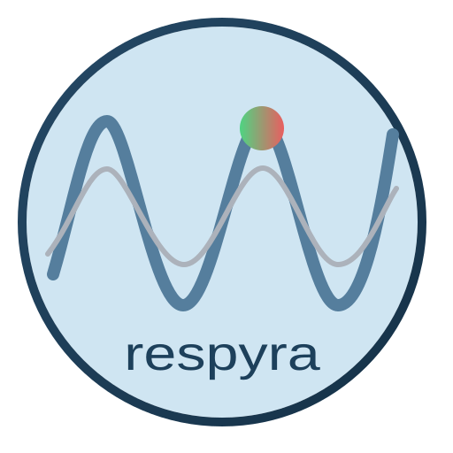

About Respyra 2.0
Respyra 2.0 is a research software project developed by George Fejer. It packages a breathing target-tracking study, sensor-stream applications and synchronized local recording into an installable Windows suite.
The original respyra
Micah Allen and the Embodied Computation Group created the original respyra Python toolbox for respiratory interoception research. It integrates a Vernier respiration belt with PsychoPy, letting participants follow a sinusoidal target with their breathing while visual feedback and gain are manipulated.
Respyra 2.0 uses the original task foundations and original logo artwork. Please acknowledge that work separately from the Windows suite and its additional acquisition and recording tools.
Allen, M. (2026). respyra: A General-Purpose Respiratory Tracking Toolbox for Interoception Research. PsyArXiv preprint.
What this project adds
- A Windows suite with Respyra 2.0, Polar Stream Mini, Vernier Stream Mini and one shared launcher.
- Explicit LSL input contracts for raw Vernier force and two signed Polar acceleration-derived breathing candidates.
- A participant/session control hub, stream selection, local visualization and an optional approval-based phone controller.
- Native XDF capture from before calibration through cleanup, source-specific calibrated comparison waveforms, JSON events, original CSVs and automatic behavioral BIDS exports.
Implementation: Respyra 2.0 and Mini stream apps. Method definitions and limitations: default variable reference.
Research use and reproducibility
The current Windows release is v0.3.8, an unsigned preview. Synthetic-stream recording and analysis checks provide software evidence; real-device behavior, Bluetooth reconnection and scientific display timing require qualification on the study computer.
Record the suite version, source revisions, sensor model, mounting and inhale direction in your methods. Retain the XDF metadata, event stream and quality companions when interpreting motion-derived respiration, and cite the original toolbox for its task foundations.
Licenses and artwork
Original Respyra 2.0 project code is GPL-3.0-only. The upstream respyra package and original transparent logo artwork retain their MIT license; bundled software keeps its respective licenses.
Mini icons come from the bundled Mini applications. The screenshots show the actual HTML interfaces in headless browser previews with simulated setup data, rather than participant recordings or evidence of physical sensor performance.